It is a tool that helps manage and track changes to source code
VCS is essential for software development and other projects where maintaining a history of changes, collaboration
Git - The most widely used DVCS; supports branching and distributed workflows.
Subversion SVN - A CVCS used in enterprise applications.
Mercurial - Another DVCS, simpler than Git in some aspects.
Perforce - A CVCS often used for large-scale enterprise projects.
Tracking Changes - It records changes to files over time, enabling developers to see who changed what and when.
Collaboration - Multiple people can work on the same project simultaneously without overwriting each other’s work.
Branching and Merging -: Developers can create separate branches for different features or experiments and later merge them into the main project.
Version History - : It keeps a history of all changes, making it easy to revert to previous versions if needed.
Conflict Resolution - Helps manage and resolve conflicts when multiple developers make changes to the same file.
Backup and Recovery - Acts as a backup for the project.
Sign up to GitHub.com
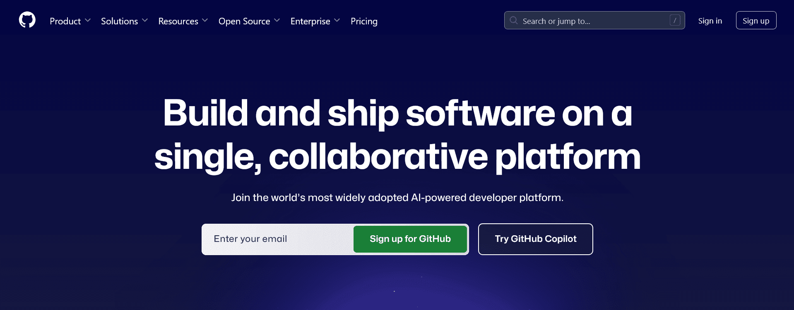Now We are creating New Repository ( Folder )
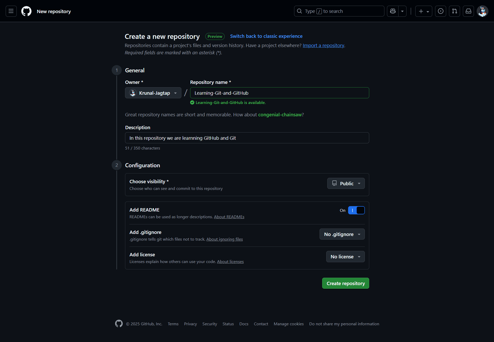Write Repository Name and Description, README Section Turn On, then click on Create Repository
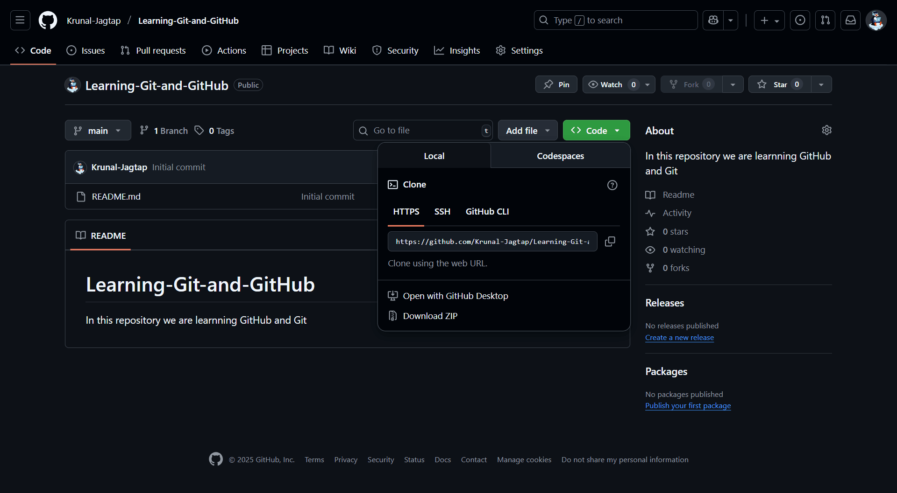Now our new repository is successfully created 🎉
Copy the repo link and open vs code
Open VS Code terminal shortcut ctrl + `
Fill Email and Username using this commands
git config --global user.email "your-email@example.com"
git config --global user.name "Your Name"
Git Clone - Clone Repository from Link
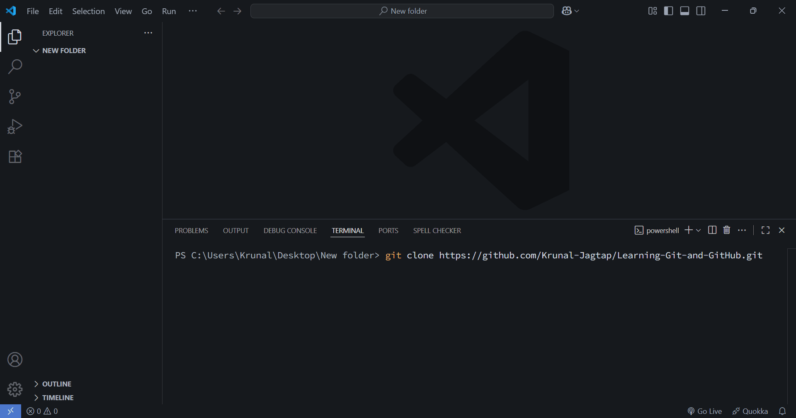 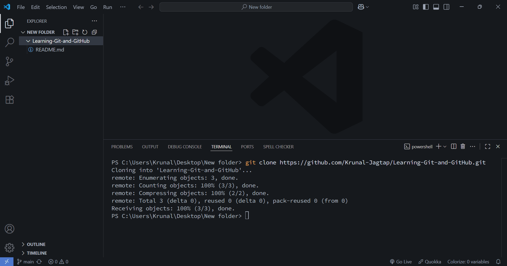You Successfully Clone the Repository 🎉
Create Learn.html file, We can see in img Learn.html file have symbol ( U ) UnTracked File
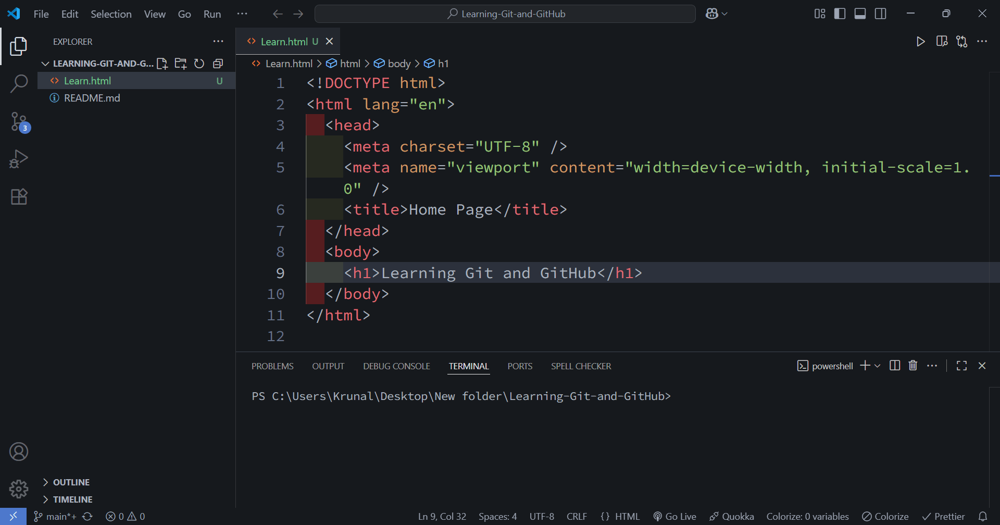git add - Add Files in Staging phase
Now We can see Learn.html file have symbol ( A ) File Added and Start Tacking
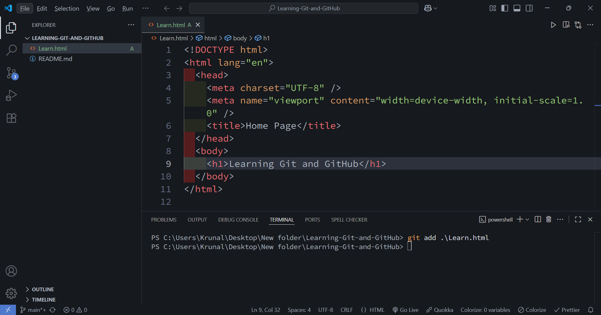git commit -m "" - Now we have to commit the code means create a checkpoint for our code.
if in future some feature is not working then using checkpoint we can go backward in code using these checkpoints
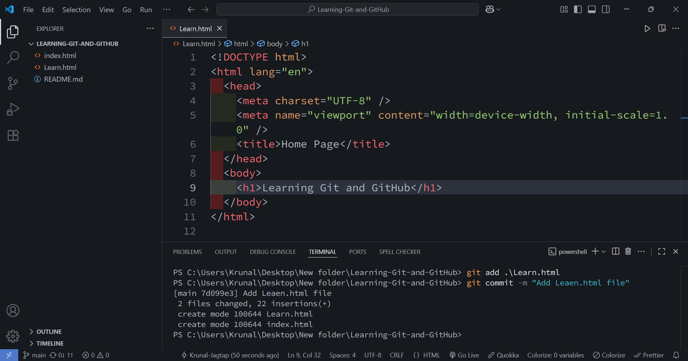git push - Now we are adding code in GitHub
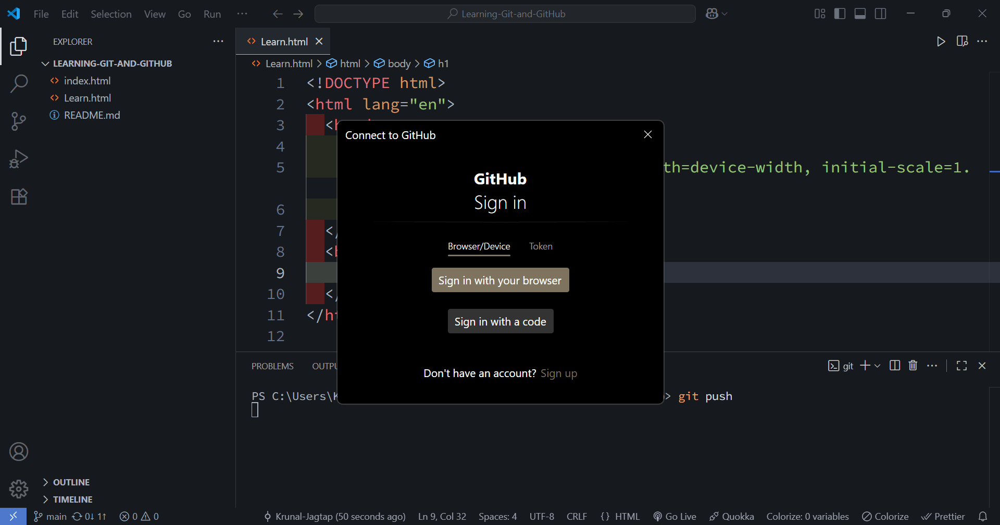1st time when you run git push command we have to content to GitHub, Just click on Sign in with browser, it will automatically open your browser and now you are connected
Check your vs code git push command already runs.
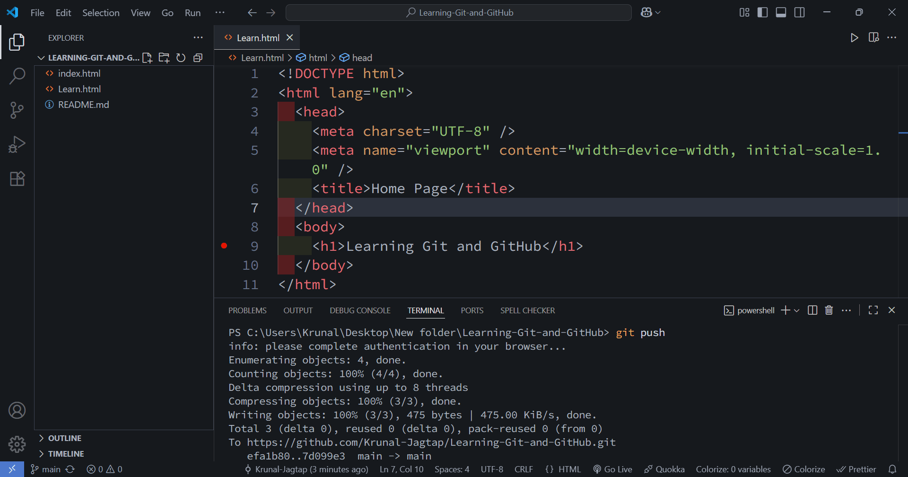Now Check your Files in GitHub Repository
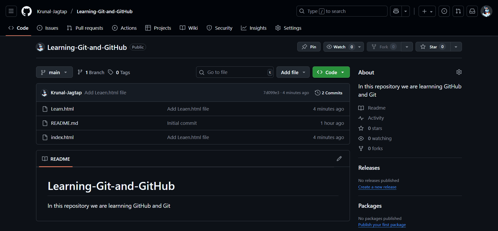🎉 Configuration 🎉
You Successfully Learn Git and GitHub 🏅Now Keep Building Projects